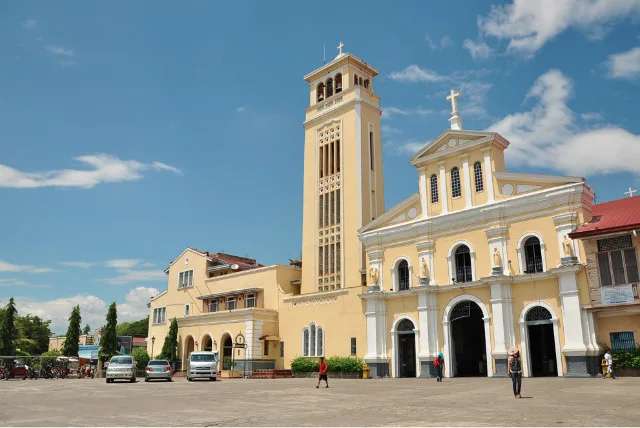
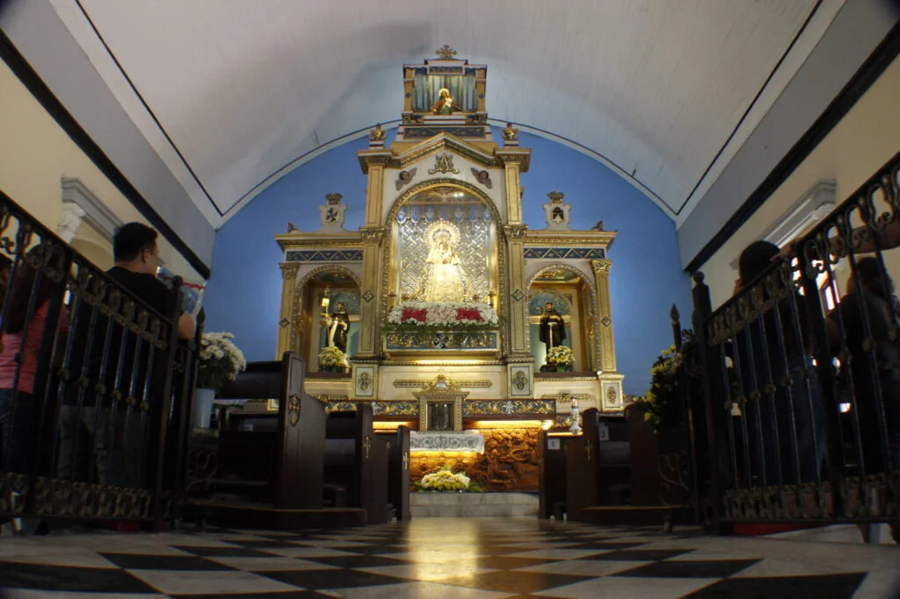

The Minor Basilica of Our Lady of the Rosary of Manaoag is a major Roman Catholic pilgrimage church located in Manaoag, Pangasinan, Philippines. Enshrining a venerated 17th-century image of the Virgin Mary, it is one of the country’s most visited Marian shrines and a focal point of Filipino Catholic devotion. The basilica is administered by the Order of Preachers (Dominicans) under the Archdiocese of Lingayen-Dagupan.
Fun Facts
- The basilica houses a venerated image of the Blessed Virgin Mary that is believed to have miraculous powers.
- Every year, hundreds of thousands of pilgrims visit, especially during Holy Week and the feast day in May.
- The basilica’s architecture combines Spanish colonial and local Filipino influences, making it a historical landmark as well as a spiritual one.
Origins and Apparition

According to tradition, a farmer in 1610 saw an apparition of the Blessed Virgin Mary holding the Child Jesus on a treetop, who called for a church to be built on that spot. The town name Manaoag derives from the Pangasinense word mantaoag—“to call.” Dominicans later established the mission and enshrined the ivory image brought from Spain via Mexico by Fr. Juan de San Jacinto, O.P.
Architecture and Features

The church, rebuilt after fire and earthquake damage, exhibits Spanish-Romanesque design with Renaissance influences. Its façade bears three tiers culminating in a small temple housing an image of Nuestra Señora de Manaoag. Inside are murals depicting miracles, a grand dome, and the famed “wall of miracles.” A veneration room behind the main altar allows pilgrims to touch the mantle of the Virgin. The complex also includes a museum, candle gallery, rosary garden, and pilgrim center.
Religious Significance
The basilica symbolizes enduring Filipino Marian devotion. Pope Pius XI granted the canonical coronation of the image in 1926, affirming its reputation for miracles and intercession. It gained a Special Bond of Spiritual Affinity with Rome’s Basilica di Santa Maria Maggiore in 2011, allowing pilgrims plenary indulgences akin to visiting a papal basilica.
Pilgrimage and Devotion

Tens of thousands visit especially during Holy Week and October’s Rosary Festival. Regular Masses, blessings of religious articles and vehicles, and the “First Saturday Rosary Procession” sustain its living tradition. The basilica’s radio station, Radyo Manaoag 102.7 FM, and online services extend its outreach to devotees worldwide.
During World War II, the church was protected by townsfolk who hid the sacred image in a secret compartment, fearing it would be destroyed. Miraculously, the image remained untouched, and the story strengthened the faith of locals, earning the basilica its reputation as a miraculous sanctuary.